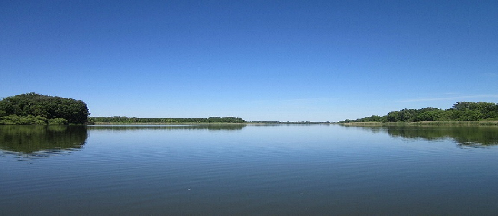
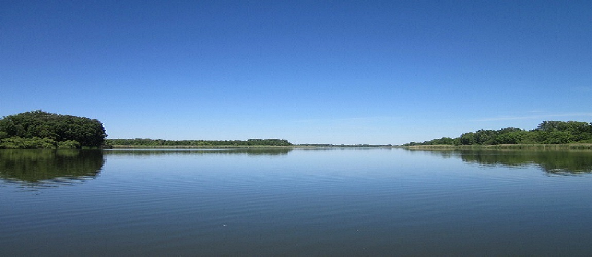

Strona główna
Dowiesz sie wszystkiego co najważniejsze o pięknym i majestatycznym regionie Polski w województwie kujawsko-pomorskim - Kujawy!
Dowiesz sie wszystkiego co najważniejsze o pięknym i majestatycznym regionie Polski w województwie kujawsko-pomorskim - Kujawy!
